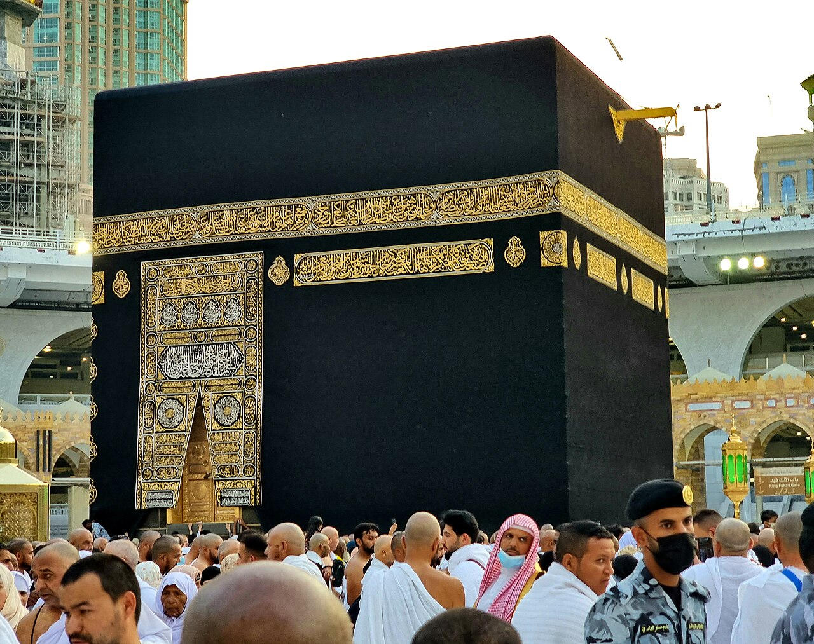

Ehrom
Miqotdan o‘tmay niyat qilib, ehromga kiring va talbiya ayting.
Niyat va talbiya
Hujjatlardan uyga qaytishgacha 25 bandli cheklist, safar sanasiga qarab reja va tavof hisoblagichi. Belgilaringiz shu qurilmada saqlanadi.

Bosqichni tanlang va bajarilgan bandlarni belgilang.
1-bosqich · Safar tasdiqlanguncha
Hujjatlar, chiptalar va bandlovlarni bir joyga jamlang.
Har bir aylanish Hajarul Asvad ro‘parasida tugaganda katta tugmani bosing. Hisob telefoningizda saqlanadi, sanoq davomida ekran o‘chib qolmaydi.
0/ 7 aylanish
Hajarul Asvad ro‘parasidan boshlang.
To‘rt amal shu ketma-ketlikda bajariladi.
Miqotdan o‘tmay niyat qilib, ehromga kiring va talbiya ayting.
Niyat va talbiya
Ka’bani chap tomonda qoldirib, Hajarul Asvad ro‘parasidan boshlang.
7 aylanish
Safodan Marvaga bir qatnov. Safodan boshlang, Marvada tugating.
7 qatnov
Sa’ydan keyin soch oldiriladi yoki qisqartiriladi. So‘ng ehromdan chiqiladi.
Ehromdan chiqish
Bir sahifalik A4 cheklistni yuklab olib, chop eting.